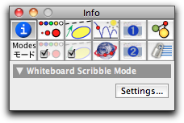
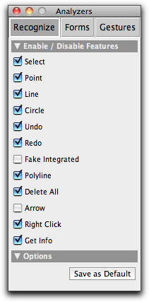
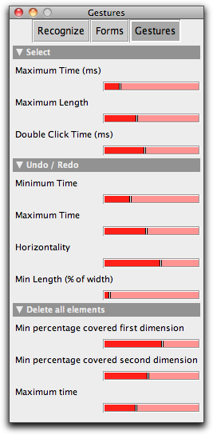

Scribbling

In Scribble Mode, you just draw using the pen and Cinderella attempts to recognize what you intended to do with the stroke. Cinderella interprets every scribble that you do — a scribble means your pen movement from the moment you put it down until you pull it up again.
While you are scribbling, Cinderella gives you a visual feedback in the upper center of the view on what would happen if you end the stroke right then.
Creating Elements
One class of scribbles are those that create new elements into the construction. The meaning of a scribble may be influenced by the elements that are selected when you start the scribble.The following elements can be created:
Points
 |
Draw a small scribble to create a Free Point. The size of the new point will be similar to the size of the scribble you drew. You can draw a point-scribble over an existing point to change its size.
Preselect two points and draw a small scribble in the middle of those to create a Midpoint.
Lines
 |
Draw a line to create a line through two points. The endpoints are created if they do not exist. Short scribbles create lines that are cut off at the endpoints; scribbles over 80% of the window are not.
Preselect an existing line and draw a scribble parallel or orthogonal to it to create a Parallel or Orthogonal. Preselect two lines and draw an Angular Bisector to create one.
Polylines
 |
Draw multiple lines to create a sequence of segments. If the last point is near the first point, a Polygon is created.
Circles
 |
Draw a circle to create a Circle By Radius. A midpoint is created if it does not exist. Preselect a midpoint for greater tolerance. If the scribble passes exactly 3 existing points to create a Circle By 3 Points. Pass exactly 1 point to create a Circle By Midpoint and Border Point.
Gestures
Gestures are those scribbles that do not create a new element but influence those that are already there.Moving and Selecting
 |
Tap an object once to select or deselect it. Tap in an empty space to deselect all. Move a selected object by dragging it. This applies to Free Points as well as other free elements, such as Circle by Radius.
Changing the Name
Tap an element twice within a short time period to open a dialog that allows you to change the element name.Undo and Redo
Draw a horizontal, straight, quick scribble over 30% of the window width to the left to undo the last action; to the right to redo an action.Delete All
Draw a quick, large gesture, crossing out all of the construction, to delete all elements.Inspect
A straight line down, then back up to the startpoint, opens the Inspector.Right Click
A straight line up, then back down simulates a right mouse button click. Usually, this brings up the context menu; this can be adjusted in the Modes / Language-Tab of the Inspector.Customizing the Scribble Mode
You can customize the scribble mode. In the Info tab of the Inspector, a Settings... button will appear when you have selected Scribble mode: |
Press this button to bring up the Scribble Mode configuration interface. It has three tabs: Recognize, Forms and Gestures. In the Recognize tab, you can enable and disable the various recognition modes to facilitate the recognizing of the remaining modes:


The other two tabs let you set various parameters of the recognition modes. You can use this to fine-tune Scribble Mode to your particular hardware device; the settings you do here are remembered across different Cinderella sessions on the same computer.
Page last modified on Monday 05 of September, 2011 [09:13:48 UTC].
The original document is available at
http://doc.cinderella.de/tiki-index.php?page=Scribbling